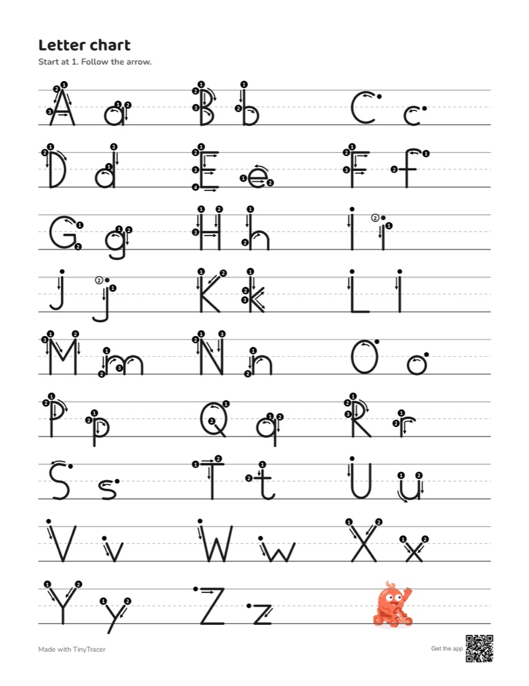
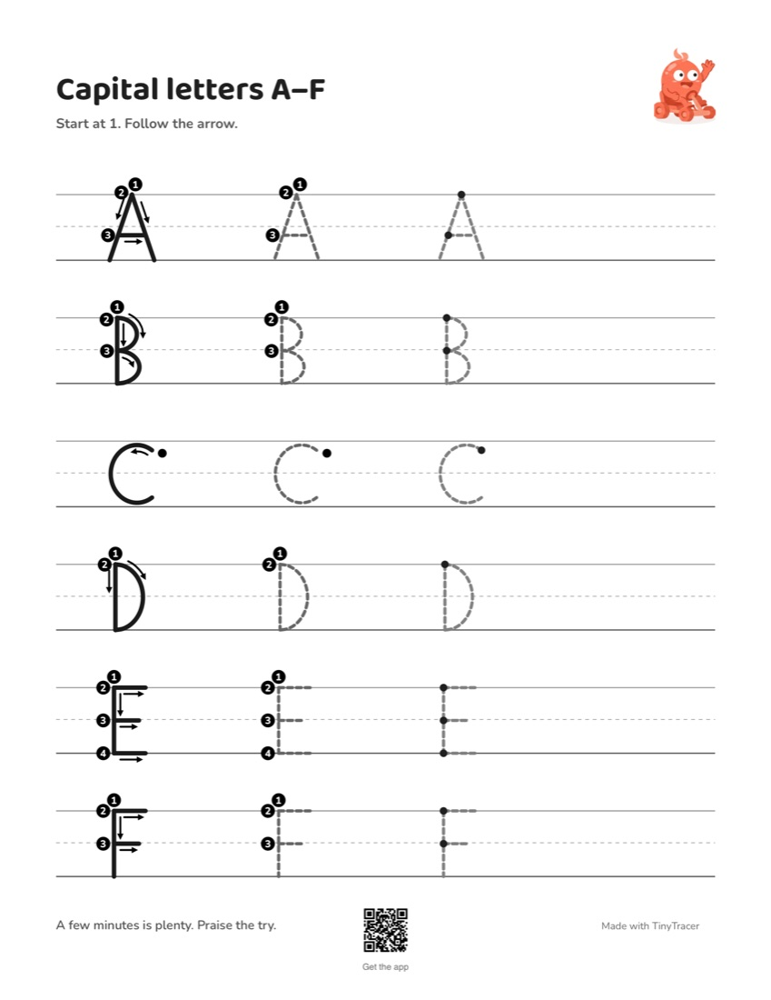

Free printable letter tracing sheets
Two free sheets from the TinyTracer app. Each letter has numbered start dots and arrows that show where to begin and which way to go. Print one and practice with a real pencil. No sign-up, no email.
Download a sheet

A–Z letter chart
Every capital and lowercase letter on one page, with numbered start dots and arrows. Good for a first look at stroke order.

Capital letters A–Z
Five pages. Each letter is shown with arrows, then dotted to trace, then with start dots only, so your child moves from tracing toward writing on their own.
Printing tips
Paper size
Use US Letter in the US and Canada, A4 almost everywhere else.
Print at 100%
Choose "Actual size" or 100% in the print dialog so the lines stay the right size.
Keep it short
A few minutes is plenty for young children. Praise the try, not just the result.
More sheets in the app
The TinyTracer app makes more sheets on your phone or iPad, including one with your child's own name. The PDF is made on your device and nothing is sent to us. Printing is available on Tracer and Author profiles. Lowercase, numbers and "my letters" sheets are part of Premium.